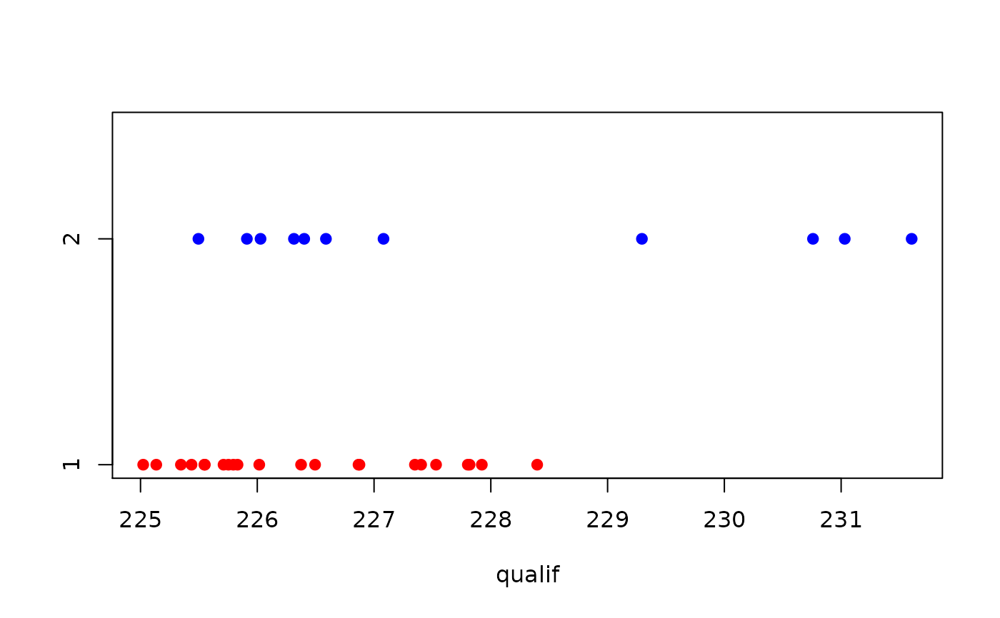
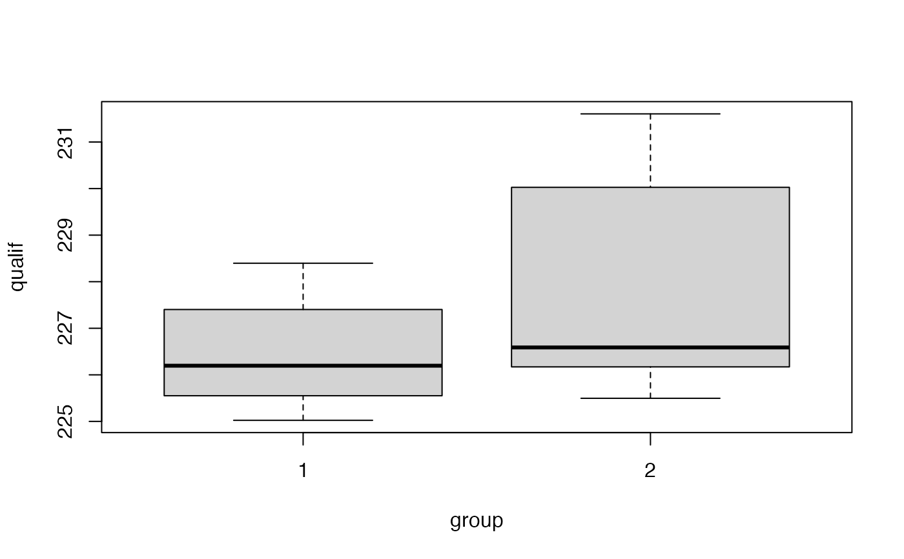

Data for Exercises 7.11 and 7.36
Indy500
A data frame/tibble with 33 observations on the following 4 variables.
a character variable with values andretti,
bachelart, boesel, brayton, c.guerrero,
cheever, fabi, fernandez, ferran, fittipaldi,
fox, goodyear, gordon, gugelmin, herta,
james, johansson, jones, lazier, luyendyk,
matsuda, matsushita, pruett, r.guerrero,
rahal, ribeiro, salazar, sharp, sullivan,
tracy, vasser, villeneuve, and zampedri
qualifying speed (mph)
number of Indianapolis 500 starts
a numeric vector where 1 indicates the driver has 4 or fewer Indianapolis 500 starts and a 2 for drivers with 5 or more Indianapolis 500 starts
Kitchens, L. J. (2003) Basic Statistics and Data Analysis. Duxbury
stripchart(qualif ~ group, data = Indy500, method = "stack", pch = 19, col = c("red", "blue"))boxplot(qualif ~ group, data = Indy500)t.test(qualif ~ group, data = Indy500)#> #> Welch Two Sample t-test #> #> data: qualif by group #> t = -1.9197, df = 12.033, p-value = 0.07892 #> alternative hypothesis: true difference in means is not equal to 0 #> 95 percent confidence interval: #> -3.0111081 0.1899245 #> sample estimates: #> mean in group 1 mean in group 2 #> 226.4538 227.8644 #># NOT RUN { ggplot2::ggplot(data = Indy500, aes(sample = qualif)) + geom_qq() + facet_grid(group ~ .) + theme_bw() # }